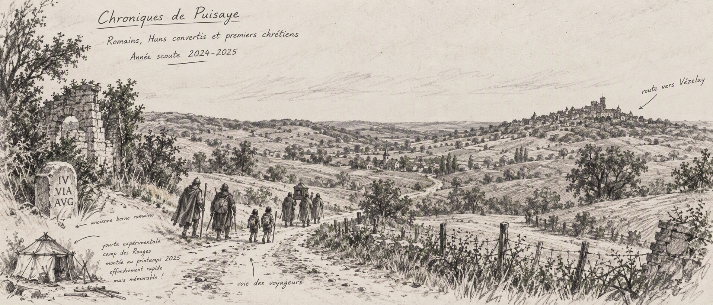

Passer l’introduction
☰
Accueil
Vivre l’aventure
Les rites et cérémonies
Les rôles dans l’équipe
Les projets
Les savoirs
Le village des gardiens
Grandir en paix
L’esprit des temps spirituels
La Loi scoute
La progression personnelle
Les imaginaires choisis
Carnets
Carnet scout 2024-2025

Les derniers romains de gaule, et des huns convertis...